第22章 紧凑交易区间¶
第 22 章 紧凑交易区间
紧凑交易区间是一种常见形态，它有很多种名称，但没有哪个术语对它的描述是足够准确的。它是一种横向通道，由两棒或更多棒构成，棒线之间存在大量重叠，也可能包含多重反转、很多十字星、突出的尾线，既有多头，也有空头实体，它可能延伸十几棒或更多棒。大部分止损入场的结果都是亏损，所以应该避免。如果电子迷你的平均日区间约为 10 至 15点，那么高度为 3 点或更窄的任意交易区间，可能都是紧凑交易区间。如果棒线很长的话，那么高度为 4 点，有时高度为 5 点的区间也可能形成紧凑交易区间。
多空双方势均力敌，交易者们正在等待突破和突破后市场的反应。突破是会继续（可能是在小幅回撤之后），还是会回撤并形成反转，不久之后突破穿越交易区间的另一侧呢？仅仅因为市场横盘，并不能认为机构多半已经停止交易。每一棒的成交量通常都保持较高水平，不过比之前趋势中的棒线对应的成交量低一些。多空双方都在积极地新建交易，他们都努力在自己的方向上制造一个突破。有些交易者正在刮头皮，而有些交易者正在加仓，最终到达最大仓位。最后，一方获胜，另一方放弃，一条新的趋势腿开始。举例说明，如果有一段持续了很长时间的紧凑交易区间，很多多头已经达到他们不希望超越的头寸规模，那么当市场开始测试区间底部时，就没有足够的多头拉升市场回到区间中部或顶部。然后市场开始向下突破，这些不能或不愿再加大头寸规模的多头，只希望其他拥有足够购买能力的多头使空头突破反转。市场每下跌一个跳动，就有更多多头抛售他们的多头头寸而认赔离场，至少在若干棒内他们不会考虑再次买进。这种卖出行为进一步推动市场下跌，致使更多多头认赔卖出。当剩余多头放弃、卖出并且等待另一个可能的底部时，这种卖出行为可能加速。这一过程出现于所有交易区间内，也是趋势型交易区间日中的迟到突破的起因。举例说明，如果出现一个向上突破，那么部分原因是有太多空头不再有能力或不愿意加大他们的头寸规模，剩余空头无法抵挡对区间顶部的下一次测试。市场向上突破，空头开始买回他们的空头头寸，至少在几棒之内不愿再次卖出。空头卖空的缺乏，加上他们回补空头时的买进，制造了一个单向市场，迫使剩余空头买回他们的空头头寸。这种空头回补，加上多头的买进，常常引出一个延长的多头波段。
失败的突破和反转很常见。通常最好不在突破入场；而是等待强坚持到底，然后以市价入场，或者等待突破回撤，然后在趋势方向入场，或者等待失败的突破，然后在相反方向入场。虽然没有人知道高频交易（HFT）公司的分析师们正在使用什么算法，但是巨大的成交量和具有大量反转的小幅波动，显然是交易程序正在反复刮取 1 到 4 个跳动利润的结果。那些数学分析师们甚至无需观看图表。他们设计的程序在小幅波动中投资，对于一位聪明的程序员来说，紧凑交易区间看起来是一个完美的环境。
紧凑交易区间中的每一次回撤都要归功于微型买进或卖出真空，就像所有交易区间的顶部和底部一样。很多多头和空头将准备在高点下方一定数量的跳动处买进，而另有一些交易者将准备在前一棒低点下方一定数量的跳动处买进。他们都是想要买进的交易者，但不是在当前价位。空头想要买回他们的空头刮头皮头寸，多头希望建立多头刮头皮头寸。这些买家在当前价位的缺席，导致市场受到引力而下跌。一旦市场到达他们预期的价位，他们便突然积极买进，致使市场向上反转。空头获利了结他们的空头头寸，多方新建多头头寸。一旦市场靠近区间顶部，上述过程便开始反转。多头获利了结，抛出自己的多头刮头皮头寸，空头建立新的空头头寸。相同的过程出现在所有类型的通道中，而不管通道是水平的（比如紧凑交易区间）还是倾斜的（比如尖峰之后的通道）。
在紧凑交易区间内，交易数学是反对交易者使用止损单入场和出场的，但是，对于大多数交易者来说，决定交易者方程何时对限价单入场有利又非常困难。对于大多数交易者来说，最好的选择就是等待突破，然后判断它是很可能成功还是很可能失败，然后再寻找交易机会。这一点同样适用于紧凑通道，紧凑通道只是一种倾斜的紧凑交易区间。虽然市场大部分时间都处于通道中，要么表现为横向的交易区间，要么表现为倾斜的通道，但是当通道紧凑时，在通道内交易特别困难。当通道和交易区间比较紧凑时，只有最能稳定获利的交易者才可交易，他们将使用限价单入场。大部分交易者应该几乎全部使用止损单入场。而在紧凑通道中恰好不宜使用止损单入场，所以大部分交易者不应在紧凑通道中交易。相反地，在再次交易前，他们应该等待尖峰或较宽的通道。
P200
通常，紧凑交易区间是一种延续形态，但是，如果它形成于一个高潮反转之后，即便是一个小型的高潮反转，那么市场向任一方向突破的几率就是相等的。这是因为高潮反转已经产生了反向动能，而你不知道这种反向动能是会继续并引起突破，还是先前趋势的动能将会恢复。当没有高潮反转时，如果一段紧凑交易区间形成于一条强趋势腿之后，那么向趋势方向突破的几率可能达到 55%。不过，突破的方向概率可能永远不会高于那个数，否则市场就不会形成交易区间了。如果趋势不大强，那么（向趋势方向突破的）几率可能只有 53%。即便市场逆势突破，该形态也通常演变为一个较大的交易区间，几率最终仍偏向于形成顺势突破。记住，所有交易区间只是较高时间框架图表上的回撤。然而，如果交易者在紧凑交易区间内在趋势方向上入场，并且使用非常宽的止损，容许市场演变为较宽的交易区间，那么交易者方程就变得难以确定。风险、回报和胜率变得难以评估，每当这种情况出现时，最好不要交易。因此，使用宽松止损并长时间持有，通常不是一种好策略。如果交易者在紧凑交易区间中顺势入场，预期趋势恢复，但市场向另一方向突破，那么通常最好离场，等待更大的交易区间形成，然后再尝试做顺势波段交易。
因为紧凑交易区间也是一种交易区间，所以市场在区间顶部附近的下跌几率和在区间底部的上涨几率都是 60%或更高。但是，由于区间紧凑，通常没有足够的空间产生获利交易，所以这种（很高的）胜率是毫无意义的。如果区间形成于一条多头腿之后，那么最好只假设向上突破的几率是 51\~55%；如果区间形成于一条空头腿之后，那么最好只假设向下突破的几率是 51\~55%。
紧凑交易区间胜过一切，特别指胜过所有交易的伟大理由。不管你在图表上还看到什么。一旦市场进入一段紧凑的交易区间，那就是在告诉你它已经失去方向，向上或向下突破的几率决不会超过 55%。由于它仍然是一种交易区间，所以先前趋势恢复的可能性略大一点，但是交易者们应该认为那一几率仍然只有 51\~55%，具体情况取决于先前趋势的强弱，以及紧凑交易区间之前是否有强反转。紧凑交易区间由很多反转构成，每个反转都是由一个失败的突破尝试演变而来。将形成很多“非常棒”的买进和卖出信号棒，有些信号棒拥有强有力的逻辑支持。举例说明，如果触发一个非常棒的做空信号，但市场在一两棒内形成另一条更好的多头反转棒，多头可能认为空头被一个强信号所套，所以至少在几棒之内不愿意再次做空。也就是说近期将有较少的空头，市场很可能形成成功的多头突破，持续若干棒。这种逻辑无懈可击，但是你要记住那句咒语：“紧凑的交易区间胜过一切。”。这包括你能想到的所有美妙的、符合逻辑的交易理由。反转表明机构正在棒线上方使用限价单卖出，使用限价单在棒线下方买进。你的工作是跟随他们正在进行的操作，决不应该做相反的事情。在紧凑交易区间内使用止损单入场和出现是一种失败的策略。高频交易公司能够在紧凑交易区间内做利润目标为 1 到 3 个跳动的刮头皮而获利，而你却不能，所以你必须等待。这些紧凑区间内的成交量多半是由他们制造的，你无法使用他们的交易方法获利。你不得不等待，而等待是很难做到的。有时，一段紧凑交易区间可能持续 20 棒或更多棒，然后它真的变成一个没有预测价值的架构。由于猜测从来都不是明智的交易方法，所以价格行为交易者们必须等待突破，然后再决定怎么操作。大部分情况下，突破会在一两棒内失败，如果你的入场是以（突破）失败而不是突破为依据，那么交易获利的几率会更高。反转尝试多半失败，成为突破回撤。一旦突破之后形成回撤，那么就在突破恢复时使用止损单在突破方向上入场。在多头突破中，等待回撤棒收盘，然后使用买进止损单在它的高点上方 1 个跳动处入场。如果预期的回撤棒不是回撤，而是引起反转，市场快速穿越紧凑交易区间的另一侧，或者下几棒中有一棒跌穿区间底部，那么你可以使用止损单在紧凑交易区间下方 1 个跳动处做空，或者你可以等待突破回撤出现后做空。
在交易区间日，延长的紧凑交易区间突破后的运动通常不强，所以市场在当天剩余时间常常是基本保持无趋势状态。但是，如果紧凑交易区间之前是一轮强趋势，那么市场的行为将非常不同，因为当天常常会成为一个趋势恢复日。这里（试举一例），开盘形成一轮强趋势，持续 1 小时左右，然后是一段持续数小时的紧凑交易区间，最后，区间在原来趋势的方向上突破。这种突破常常引起第二轮趋势，第二轮趋势的幅度大约与第一条腿相同。突破偶尔形成于相反方向，将先前趋势的大部分或全部反转。
紧凑交易区间内通常会形成两个方向的架构，但是对于大部分交易者来说，一旦他们认为市场已经进入紧凑交易区间，就不应做任何交易。如果他们刚刚入场，市场便进入紧凑的交易区间，那么最佳选择是努力在盈亏平衡或小幅亏损的情况下离场，然后在决定再次交易前等待突破。举例说明，如果交易者们因为自认为市场有 60%的可能会在上涨 10 个跳动前下跌 10 个跳动，但现在市场处于紧凑的交易区间内，那么交易数学就已经改变。交易者们现在大约只有 50%的成功率，只要他们的风险和潜在回报不变，那么他们现在所考虑的就是一种失败的策略。他们的最佳选择是在盈亏平衡点离场，如果足够幸运，他们可能在离场时获得一两个跳动的利润。
P201
无论看到什么形态，而且总有一些形态在形成时看起来很棒，但是你不得不考虑到等距运动的概率只有 50%。只有当盈利的可能性乘以潜在回报的积明显大于亏损的可能性乘以风险的积时，你的交易才具有获利性，但是，由于紧凑交易区间具有很强的磁性，区间内的运动幅度都很小，突破通常失败，而且即便突破成功，通常也会在不久后受到吸引，返回区间内部。这使得利润为风险两三倍的可能性非常小；因此，任何的突破策略，比如在一棒上方买进或者在一棒下方做空，长期来看都是失败的策略。
由于紧凑交易区间是一种通道，所以可以像其他通道一样交易，但是，由于波动幅度很小，而且需要很多棒才能到达利润目标，所以交易非常拖拉。对于大部分交易者来说，一旦他们认为市场已经进入一段紧凑的交易区间，那么就应避免任何交易。有时，一段紧凑的交易区间从顶部到底部拥有足够的点数，可以在顶部的小型空头反转棒做空，或者在底部的小型多头趋势棒上方买进，做一笔刮头皮交易。激进型的交易者们正在前一棒的低点下方买进，或者在前一棒的高点上方做空，在刮取小幅利润后离场。如果紧凑交易区间之前是一轮趋势，那么顺势交易更可能盈利，而且部分头寸可以继续持有，转化为波段交易。举例说明，如果市场在一轮很强的上涨后进入一段紧凑的交易区间，而且该区间一直位于均线上方，那么多头将会在前一棒线的低点下方买进。虽然他们可以在区间顶部以刮头皮交易离场，但是他们也可以持有部分头寸，等待上涨波段。其他交易者（多半是高频交易公司）会在区间中点下方、以及每下跌一两个跳动时对多头头寸逐步加仓。空头则在区间中点上方以及每上涨一两个跳动时卖空。多空双方都在区间中部获利了结，最早入场的交易不赚不赔，后来入场的交易获利。
由于交易者们应该把精力集中在最好的架构上，所以他们应该始终避免最坏的架构；紧凑交易区间便是最坏的。对于初学者来说，紧凑交易区间是一个最大的问题，也是至今为止妨碍他们稳定获利的最大障碍。举例说明，新手们记得棒线计数在前几天的趋势期间非常可靠，于是他们开始在区间中使用棒线计数，预期很快出现突破，但是突破一直没有到来。他们把每个反转看作一个新的信号，在他们下单时，每个信号看起来都不错。可能出现一条强空头反转棒，从一个看起来很棒的低点 2 做空架构突破而出。但是它仍然是在紧凑的交易区间内，之前有 14 条重叠的棒线，而且均线呈水平趋势。在区间内部，先前可能有 6 次反转，没有哪个反转的运动幅度大到足以做一刮头皮交易。大约一小时后，交易者们变得沮丧，因为他们看到自己刚刚连续亏损 6 笔。虽然亏损不大，但是他们现在亏损了 7 个点，当天只剩下 1 个小时。几个小时之内，他们把过去三天的盈利全部还给市场，他们发誓再也不犯那样的错误了。然而，两天之后他们重蹈覆辙，然后至少一周犯几次那样的错误，几个月之后，他们账户中的资金就不足以交易了。
对他们来说，账户中的原始资金是一份礼物。他们给自己一个机会，看是否有可能为自己和自己的家庭创造一种新的、美好的生活。但是，他们一再让自己打破交易中最重要的规则，在紧凑交易区间内交易。他们妄自尊大地认为他们的读图能力很强。毕竟，他们已经连续三天赚钱，他们肯定是非常娴熟，否则怎么会连续三天赚钱呢。他们认为连续 6 笔亏损交易之后应该是一笔盈利交易，所以平均定律对自己有利。恰恰相反，他们应该做的是接受这样一个事实，即赢利交易决不是应该出现，市场通常继续做它刚刚在做的事情。那就意味着第 7 笔交易很可能亏损，而不是盈利，当天剩余时间里很可能没有非常好的交易。是的，在过去几天的那些大波段里他们交易得非常好，但是市场的特性每天都在变化，那就需要你改变自己的方法。
通常，交易者们在四五棒内的两三个信号都亏损后，他们才承认市场已经进入一段紧凑的交易区间，甚至一旦他们这样做，他们甚至会犯代价更高的错误。人们有一种很自然地倾向，认为没有什么会一成不变，一切行为都会向均值回归。如果出现了 3 笔或 4 笔亏损交易，那么下笔交易很可能盈利。那就像抛硬币，不是吗？遗憾地是，那不是市场的行为方式。当市场做趋势运动时，大多数反转尝试都会失败。当市场处于交易区间中时，大多数突破尝试都会失败。这与抛硬币相反，抛硬币的几率总是 50-50。在交易中，刚刚发生的事情将会继续反复发生的几率很可能是 70%或更高。由于抛硬币逻辑，大多数交易者在某些时候会开始考虑博奕论（译注：一种为在竞争的情况下分析决定最适宜自己一方的策略而制定决策所采用的数学方法，常用于政治、经济和军事计划）。
第一种思想是他们考虑使用输后加倍的方法，每次亏损之后，他们就把下笔交易的规模加倍，甚至增加至三倍。如果他们试着那样操作，那么他们很快便会发现，输后加倍的方法实际上是一个悖论。如果从一张合约开始，一次亏损后你交易两张合约，每次连续亏损后你都把交易规模加倍，你知道自己最后一定会赢。一旦盈利，最后那个大的赌注将会弥补之前的所有亏损，使你回到盈亏平衡状态。更好的方法是在每次亏损后把交易规模加至三倍，于是你一旦盈利，不管之前亏损多少，你的账户肯定会获得净利润。从数学逻辑上来看，输后加倍策略无懈可击，但矛盾的是，那种方法是不可能实施的。为什么呢？如果你从一张合约开始，然后在每次亏损后加倍，那么在连续 6 次亏损之后，接下来你就要交易 32 张合约。如果你在每个反转交易，那么一周至少会有 6 笔连续亏损的交易，而且常常不止 6 笔。矛盾之处在于，正舒适地交易 1 张合约的交易者，决不会交易 32 张合约，舒适地交易 32 张合约的交易者，决不会从1张合约开始。
P202
接下来，交易者们会考虑等待 3 笔（甚至更多）连续亏损交易，然后再做一笔交易，因为他们认为 4 笔刮头皮交易连续亏损的情况不常发生。实际上，那种情况几乎每天都在发生，而且市场常常会有 6 个甚至更多的反转连续失败；当那种情况发生时，市场总是处于紧凑的交易区间内。一旦他们发现连续 6 笔、甚至 7 笔交易连续亏损的情况很常见，他们就会放弃那种策略。
一旦你看到市场进入紧凑的交易区间，就不要交易。而是等待好的波段出现，而且它们通常会在下个交易日出现。你的工作不是下单交易。你的工作肯定是赚钱，如果你的亏损继续大于盈利，那么你每个月下来都不会赚到钱。如果市场看起来正在波段上涨和下跌，而且你入场一笔交易，但是，随后市场开始在下几棒形成小而重叠的十字星，那么就认为市场正在进入一段紧凑的交易区间，如果那是在全天交易时段的中间三分之一时段，那么就更有可能是进入紧凑交易区间。尽量在盈亏平衡或小幅亏损的情况下离场，等待波段回来，尽管有时不得不等到明天。不能因为亏损是交易的一部分就把钱还给市场，你亏损不起。你必须限制自己只在最佳架构交易，即便那意味着你可能一次要几个小时不交易。
作为在盈亏平衡点离场的一种替代方法，你可以继续持有头寸，但使用超出区间的宽松止损，不过那种方法的数学基础不强。最坏的选择是在紧凑的交易区间内几次入场，经受亏损，甚至是很小的亏损。如果你在空头趋势中的一段紧凑交易区间内买进，而且市场形成一个低点 2，那么你应该离场，如果可能的话，就反转做空。如果你在那段紧凑的空头交易区间内做空，随后市场形成一个高点 2，那么你应该离场，如果可能的话，就反转做多，但是仅当信号棒是区间底部的一条多头棒，而且从入场点到该形态顶部有足够的空间能够获得一笔刮头皮交易的利润时，才可那样操作。不过，那极少是一笔好交易，而且只有非常老练的交易者才可尝试。观察市场几个小时而不交易，很难做到，但那远比遭受三四次亏损，当天无法回到盈亏平衡状态要好得多。要有耐心。好架构不久就会回来。
一种重要的紧凑交易区间通常出现在中午时段，出现在当日区间的中部，而且通常靠近均线，但它可能在任意时间和任意位置出现。我们把它称作带刺铁丝，因为大型十字星和长尾线拥有尖刺一样的外形。如果你看到三条或更多基本重叠的棒线，而且其中一条或多条拥有很小的实体（十字星），那么就是一个带刺铁丝形态。那么重叠幅度多大才足以称为带刺铁丝呢？作为一条指导原则，观察一下三棒中的第二棒。通常，棒线都相对较长，表明市场存在更多的情绪化和更多的不确定性。如果它的高度的一半以上都位于它之前和之后的棒线构成的区间之内，那么你应该把那三棒看作带刺铁丝形态。在你成为强手之前，不要去碰带刺铁丝，否则你会受到伤害。小实体表明市场的运动远离棒线开盘，但持相反观点的交易者们在收盘前又把市场拉回到收盘价位。另外，一棒与前一棒差不多重叠的横向棒线，意味着没有哪一方在控制市场，所以你不应在市场方向上下注。
像所有交易区间一样，几率偏向于形成顺势突破，但带刺铁丝因拥有快速的双人拉锯信号和令过度急切的突破交易者们一再亏损而声名狼藉。在成功突破之前，带刺铁丝常常既包含失败的低点 2，也包含失败的高点 2。总之，当带刺铁丝形成于交易区间之后时，它通常向远离交易区间的方向突破。因此，如果它刚好形成于交易区间的上方，那么就更可能形成多头突破，如果它刚好形成于交易区间的下方，那么通常是形成空头突破。在不大常见的情况下，带刺铁丝形态骑跨着交易区间，你不得不观察价格行为的其他方面，以找出可交易的架构。由于所有紧凑交易区间都是多空双方达成一致的区域，所以大部分突破都以失败告终。实际上，当紧凑交易区间形成于趋势中时，它常常成为趋势的最终旗形，突破常常向紧凑交易区间回转。通常，反转至少会引起一波两条腿回撤，有时甚至是趋势反转。
研判带刺铁丝之前的运动非常重要。如果带刺铁丝形成于一波向均线的回撤中，但大部分位于均线的顺势一侧，那么它只是回撤的一部分，通常会形成顺势突破。举例说明，如果一轮多头趋势中出现一波向均线的10棒回撤，然后带刺铁丝形成，有几棒刺穿均线，但该形态基本上都在均线上方，那么就寻找多头突破。尽管你可能把向均线的 10 棒下跌看作是一轮新的空头趋势，但是如果该形态基本上都位于均线上方，那么就是多头在控制市场，带刺铁丝形态很可能只是向均线的多头回撤的终点。
但是，如果回撤穿过均线，然后带刺铁丝大部分形成于均线的另一侧，那么这一回撤就拥有足够的力道，要么可能形成第二条腿，要么是你读错了图表，趋势可能已经反转。无论哪种情况，突破都很可能是在该形态之前的运动方向上，而不是在这一向均线的回撤之前的较大运动的方向上。举例说明，如果有一轮空头趋势，现在形成 10 棒反弹向上穿越均线，正在形成带刺铁丝形态，大部分位于均线上方，那么很可能形成多头突破。带刺铁丝是上涨运动中的一个多头旗形，不是较大的下跌运动中的一个空头旗形的终点。
P203
虽然带刺铁丝很难交易，但是如果你仔细分析棒线，经验丰富的交易者还是能够有效交易的。这一点很重要，因为有时带刺铁丝形态的后面会形成一轮延长的趋势运动，特别是它作为一波突破回撤时。举例说明，假设市场正在向交易区间的底部下跌，带刺铁丝形成；如果在略低于均线处形成一个低点 2，而且信号棒是一条强空头反转棒，那么这可能是一个很强的做空架构。如果带刺铁丝形态内的尾线不是特别突出，这条空头腿的顶部是一个强反转，而且带刺铁丝形态下方有合理的目标，那么很可能出现成功突破。
有时，带刺铁丝形成于第一小时内一个多棒尖峰的终点处。当它恰好形成于多头趋势的支撑区内时，它可能成为一个反转形成，并且成为当日低点。当它形成于第一小时内的一个多头尖峰之后，而且位于阻力区时，它可能成为当日高点。在一天的晚些时候，带刺铁丝不常形成反转形态。
在带刺铁丝形态中，最重要的规则是一定不要在突破入场。而是等待趋势棒突破该形态。趋势棒是令人信服的第一个信号，但是，由于市场一直是双向性的，所以突破很可能会失败，于是我们准备做反向交易。举例说明，如果有一条多头趋势棒向上突破，突破幅度超过几个跳动，那么等那条多头趋势棒一收盘，就在那条突破棒的低点下方 1 个跳动处下单做空。有时，这个做空入场会失败，所以一旦做空，而且一旦入场棒收盘，就在那条做空入场棒的高点上方 1 个跳动处下单反转做多，那将是一个突破回撤买进入场。二次入场一般不会失败。如果突破由两条或多条连续的趋势棒构成，不要做反向交易，因为那增加了突破成功的几率。这就意味着任何回转进入带刺铁丝形态的尝试都可能失败，形成突破回撤。一旦市场开始形成趋势棒，要么多头、要么空头，很快将控制市场。当顺势突破在几棒内失败，市场反转时，带刺铁丝就成了前一趋势的最终旗形。
如果有入场信号，那么还可以在带刺铁丝顶部和底部的小型棒反向入场。举例说明，如果高点附近形成一条小型棒，特别地，如果它是一条空头反转棒，就准备在那一棒的低点下方 1 个跳动处使用止损单入场做空。也可以寻找 3 分钟图上的小型棒做反向交易。应该尽可能不用1分钟棒线做反向交易，因为3分钟和5分钟棒线能够提供更高的胜率。
由于在成功突破前带刺铁丝形态可能拥有多个尖峰，所以老手们有时会设定限价单在前一棒的低点下方买进，前提是那个低点靠近区间底部，如果那个低点位于区间中部或顶部，那么就不买进。空头会在前一棒的高点上方做空，入场点靠近区间顶部，而不会在位于区间下半部的前一棒的高点做空。尖峰越突出，这种操作就越可能奏效。另外，如果棒线的长度至少与当日平均棒线的长度相当，那么这种操作就更有效。如果棒线太小，区间太紧，那么成功刮头皮的几率就很低，交易者们应该等待。这是乏味的工作，大部分老手通常会等待具有更高成功率和更多潜在利润的运动。由于带刺铁丝形态中通常拥有不错的成交量，所以高频交易公司可能非常活跃，就像在所有紧凑交易区间中一样，他们在为了 1 到 3 个跳动的利润而刮头皮。计算机不会感到劳累，所以单调乏味对它们来说不是一个问题。
如果带刺铁丝位于强趋势中一波向均线的回撤的终点，那么你需要选择那轮强趋势方向上的二次入场。举例说明，如果多头趋势中出现一波向均线的回撤，那么你就要在高点 2 买进，即便它形成于带刺铁丝之内。如果信号棒是一条多头反转棒，而且带刺铁丝中的十字星和尾线不是太突出，那么这一点尤其正确。你必须观察整张图表，并且看到多头趋势。不要仅仅观察前 10 棒，就得出结论，市场现在处于空头波段，如果市场在强多头趋势中一直位于呈上升趋势的均线上方，那么上述结论是不现实的。
每当你不确定时，最好的做法肯定是等待，当你感觉入场早该到来时，很难继续等待。不过，那是聪明的交易者一直做的事情，因为交易低胜率架构就是不合理的。一条非常好的规则是，如果有一段交易区间正在形成，而且它位于均线附近，那么，如果棒线大部分位于均线下方，就决不要准备买进，如果棒线大部分位于均线上方，就决不要准备卖空。随着时间的发展，单单这一条规则就可为你节省大量的资金。
微型通道中有时会出现带刺铁丝行为。举例说明，在一个空头趋势日，常常在微型通道内看到小的反弹。然后可能是向下突破，突破在一两棒内失败。这不是一个买进架构，因为在空头趋势日，市场几乎总是位于呈下降趋势的均线的下方，仅当市场上涨5到10棒时，你才需要寻找做空架构。等待失败的突破演变为突破回撤，形成一个更高高点或一个更低高点，然后准备在那一棒下方做空。你正在做空的位置，恰好是那些在向下突破多头通道的那一棒上方买进的被套多头们认赔离场的位置。这些形态常常拥有尾线，可能成为带刺铁丝，它们是为逆势交易者设置的陷阱，就像带刺铁丝一样。
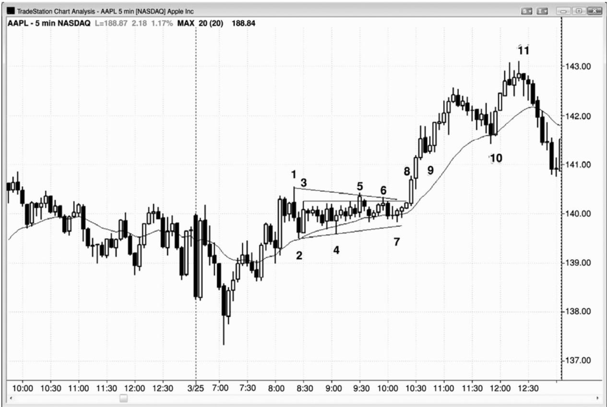
P204
截止图 22.1 中的棒 4，市场显然已经进入一段紧凑的交易区间。棒 1 是三棒内第二次尝试向下反转，随后是棒 2 尝试在一个双棒反转中向上反转。五棒之内市场方向变化了三次，是市场现在双向性很强的一个明显征兆。当市场在棒 3 之后形成一个小型十字星时，交易者们不得不怀疑它很可能正在进入一段紧凑的交易区间。当下两棒也是十字星时，紧凑交易区间实际上已经形成。
棒 5 和 6 未能突破区间顶部，紧凑交易区间演变为三角形，三角形通常也是顺势形态。由于上一轮趋势是从当日低点开始的上涨趋势，所以很可能向上突破，特别是所有棒线都位于均线上方。经过两次失败的突破之后，第三次突破成功的几率大大增加。另外，棒 7 是棒5 高点之后的一个高点 2 回撤，棒 5 高点具有一些动能。激进型的交易者可能会在高点 2 买进。
下一个合理的买入点形成于市场向上突破棒 5 的高点 2 时，棒 5 是第一个失败的突破。你还可以在当日高点上方一两美分处买进。总之，在紧凑交易区间的突破买进是一种低胜率交易。然而，交易区间形成于从当日低点开始的强多头反转之后，连续两个小时，市场几乎都在均线上方收盘，即便收盘于均线下方，距均线的距离也不超过 1 个跳动，那表明多头非常强。
胜率最高的入场是棒 9 处的第一波回撤，在跌破空头反转棒低点仅 1 个跳动之后，棒 9向上反转，把空头套入，多头套出。
另一个高胜率买进架构是棒 10 处的高点 2，刚好在均线上。入场点在棒 10 上方，棒 10是双棒反转的第二棒。一棒之前，空头微型通道被突破，所以棒10也是一个更低低点突破回撤买进架构。高胜率交易的结果常常是较少的利润，但是根据定义，它们通常拥有非常高的成功率。
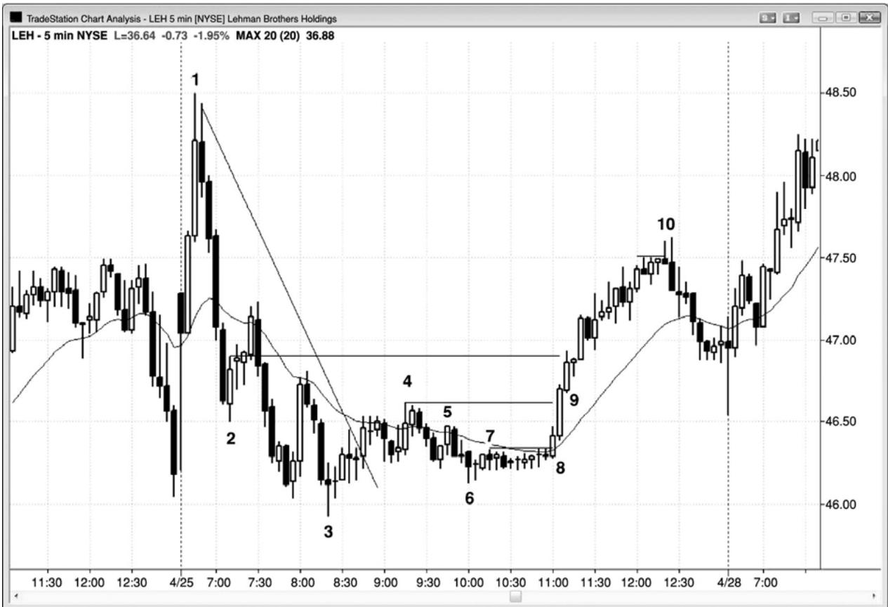
P205
有时，紧凑交易区间可能是多头趋势和空头趋势中的一波回撤。在图22.2中，从棒6到棒 8 的紧凑交易区间，是从棒 3 到棒 4 的上涨趋势中的一个多头旗形，还是截止棒 3 的空头趋势中的一个空头旗形呢？两种观点都符合逻辑，每当既有合理的看涨解释，又有合理的看跌解释时，市场就是处于不确定状态，也就是说市场处于交易区间和突破状态中。
截止棒 4 的上涨突破空头趋势线后，雷曼兄弟（LEH）在棒 6 形成一个更高低点，然后进入一段紧凑的交易区间。由于截止棒 3 的下跌运动是一个楔形，所以很可能形成一波至少包含两条腿的横向至上涨调整，特别是在从昨日低点向上反转之后。虽然交易区间突破通常失败，但是此处的向上突破可能会形成第二条上涨腿，而且它的高度将与从棒 3 到棒 4 高度差不多。甚至可能形成趋势反转，尤其因为截止棒 1 的上涨运动中显示出非常强的早期看涨力量。上侧目标包括最后一个更低高点棒 4，棒 2 和棒 3 之后的波段高点，一波向上的测量运动，其中第二条腿与第一条腿一样高，甚至可能对多头尖峰棒 1 进行测试。
截止棒 4 的上涨运动相当好地包含在一条通道内，所以可能只是两条横向至上涨腿中的第一条。它所包含的多头实体较空头实体突出，那是买压的征兆。棒 6 与棒 3 低点之后的第三棒形成一个双重底。交易者们知道，如果棒 6 低点能够保持，那么市场可能在棒 4 上方形成一波向上的测量运动，测量运动的高度等于棒 6 低点至棒 4 高点的距离。由于风险/回报比非常棒，所以激进的多头正在那段紧凑的交易区间中买进。他们冒着大约 20 美分（跌至棒 6下方）的风险，去博取1美元甚至更多的利润，胜率为50－50，那是一笔很棒的交易。
截止棒 8 收盘，市场明显变为总在场内多头，当下一棒是一条强多头趋势棒时，这一些更加肯定。多头正在市价、微型回撤、前一波段高点上方，以及多头尖峰中三棒的每一棒收盘买进。现在有大约 60\~70%的可能性会形成一波向上的测量运动，高度等于三棒尖峰第一棒开盘到第三棒收盘的距离，市场最终上涨超越那一目标。
突破后的第一波回撤是棒 9 处的小型多头内包棒，所以在棒 9 高点上方 1 个跳动处的高点 1 买进，是一笔高胜率做多交易。
截止棒10的上涨大约折返了从棒1 开始的空头趋势的65%。斐波那契交易者可能会把截止棒 10 的上涨叫做 61.8%回撤，并且说它足够接近，但是每一波回撤都足够接近某个斐波那契数字，这就使得斐波那契数字在大部分时间里毫无意义。
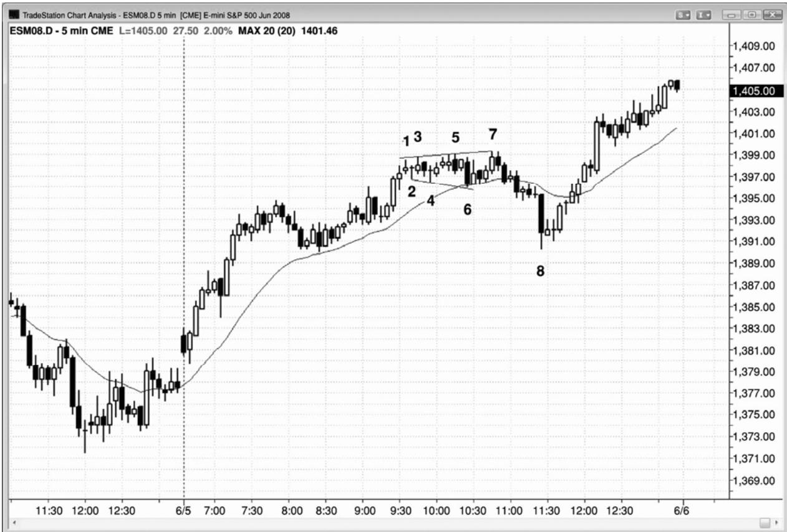
P206
虽然多头趋势中的紧凑交易区间是交易区间，所以是多头旗形，但是它在 45\~49%的情况下向下突破。然后，该形态有时演变为更大的交易区间，通常会在趋势方向上突破（在图22.3中是向上突破）。在棒 1 之后的紧凑交易区间买进的大部分交易者，要么会在市场跌破棒 5 时离场，要么会在棒 7 后面的那条空头内包棒下方离场，几乎全部会在棒被向下突破时离场。另一种策略是持有多头头寸，使用宽松的止损。然而，虽然市场三个小时以来一直未跌破太平洋标准时间上午 8:25的波段低点，但是交易者将不得不冒 7点甚至更高的风险来保持做多。大部分在紧凑交易区间买进的多头，会在棒 8 低点形成前认赔离场。在他们入场时，容易市场形成更大交易区间所需的风险太大，而且市场到达一个足够大的利润目标，以使交易者方程为正的可能性太低，所以不能持有多头头寸。在那种情况下，最好离场，然后寻找任一方向上的另一个交易机会。对于认赔离场，然后在失败的空头突破棒 8 之后的多头棒上方再次买进的交易者来说，交易者方程是合理的。这里，他们正在一个双重底买进，那可能是多头趋势中的较大交易区间中的一个底部。
截止棒 3，市场呈现出带刺铁丝形态，因为三条横盘棒中至少有一个十字星。这就意味着大部分交易者应该等待突破，然后判断它是否可能成功。积极的老手们可能会在前一棒的低点下方买进，在前一棒的高点上方做空，在底部的小型多头反转棒上方买进，在顶部的小
型空头反转棒下方做空。
棒6是一个空头趋势棒突破，随后在均线处形成一个ii形态，引出一笔多头刮头皮交易。市场已经有 20 几棒没有触及均线。市场接近收盘，市场在几个小时之前仅 1 个跳动之差就触及均线，多头认为之后市场很可能会触及均线。由于多头认为市场可能会向均线下跌，所以他们不愿在略高于均线处买进，他们对买进的拒绝使得市场成为单向市场。结果，市场以一个强空头尖峰的形式向均线快速下跌，均线下方，多头重新出现，积极买进。
棒 7 是一个失败的多头趋势棒突破，之前是第一个失败的向下突破，反向失败是二次入场，所以特别可靠。棒 7 处的双棒反转形成一个小型的扩张三角形做空架构。棒 5 也是一个扩张三角形做空架构，但是在那一点处，区间太过紧凑，不会形成刮头皮式下跌。
扩张三角形拥有强烈的双向性，所以对突破具有磁力拉力，致使大部分突破失败，比如在棒 6 和棒 7。即便在成功突破之后，市场也常常被拉回，因为它是一个多空双方都认为存在新建头寸价值的区域。棒 8 是一条大型空头趋势棒，只不过成为又一个失败的突破。
P207
这张图表的更深入讨论
在图 22.3 中，棒 8 是一个卖出高潮，一个失败的突破，与开始于太平洋标准时间上午8:15的多头通道的底部构成一个双重底，而且它后面一棒是一个第一均线缺口棒架构（它实际上是第二次尝试，因为第一次是在三棒之前。
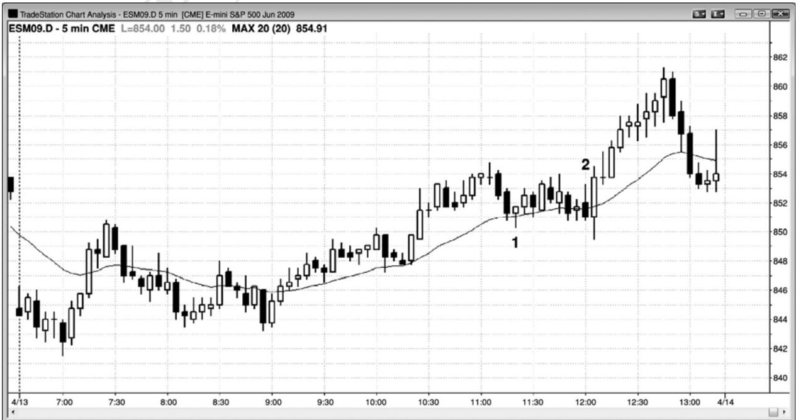
图 22.4 中所示图表看起来不会造成多大损失，是吗？但是，如果你仔细观察从棒 1 到棒2 的带刺铁丝，有 8 个连续反转，都未能达到一笔刮头皮交易的利润。一旦在均线附近看到重叠的棒线，你就要格外小心。总之，最好只考虑顺势入场（这里是做多，因为该形态基本上都位于指数均线上方），而且只可在该形态的底部或者一方明显被套时买进。虽然尾线并不像大多数带刺铁丝形态那样长，实体也不像大多数带刺铁丝形态那样短，但是均线处的重叠棒线就可制造一种危险的环境。
在15分钟图上，这个5分钟带刺铁丝只是向均线的1个高点2回撤，当有5分钟带刺铁丝形态时，根据 15 分钟图交易，当然是合理的。对于大部分交易者来说，最好的策略是等待，直到该形态已经被突破，新的形态形成时，才入场交易。有些情况下，比如这里，不存在低风险架构。棒 2 是一个糟糕的做空入场，因为交易者们正在多头日中一段交易区间底部的一条大信号棒下方做空。另外，紧凑交易区间中的空头反转棒与反转毫无关系，所以它的作用并不像反转棒。这里，它是双棒向上反转的第一棒。外包上涨棒是第二条，入场位于外包上涨棒上方，外包上涨棒是两棒中较高的一棒。仅仅因为某一棒看起来像是一条反转棒，并不意味着它的作用就像是反转棒。同时，即便某个形态看起来不像是完美的双棒反转，但有时却起到了双棒反转的作用。一直在思考市场中正在发生什么的交易者们，能够抓住这些交易。在其他时间框架中，市场走势可能大不相同— —空头反转棒可能不存在，双棒反转看起来可能是完美的。但是，如果你明白面前的图表上正在发生什么，那么就永远没有必要去寻找完美的时间框架。
图 22.5 止损入场可能连续产生 10 笔亏损交易
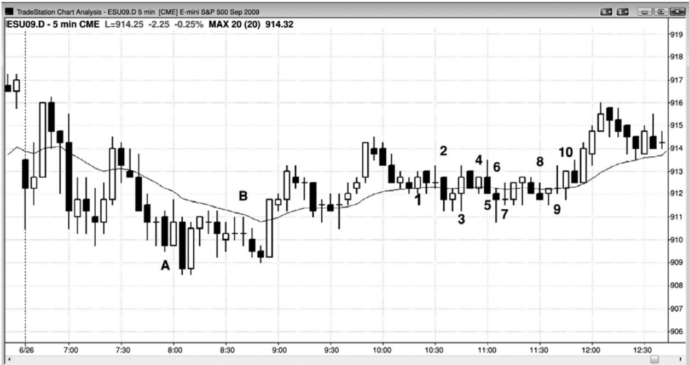
P208
对于那些认为自己能够在带刺铁丝中赚钱的交易者来说，连续10笔亏损的刮头皮交易应该是一个警告。如果交易者们不努力去理解价格行为，而只是完全机械地操作，在反转了前一棒的每一棒交易，那么这个例子充分说明了他们将遇到多大的麻烦。在图 22.5 中，棒 1 是一个招致亏损的多头刮头皮入场。如果交易者们在棒 2 反转做空，那么他们将再次亏损。如果他们在每次亏损后继续反转入场，那么他们将连续 10 次亏损，最后一次是在棒 10 做空。如果他们第一个头寸的规模是一张合约，而且他们使用输后加倍的策略（希望最后盈利的时候能够回到盈亏平衡状态），那么第 11 次入场将需要他们交易 1,024 张合约，一次只做一手的交易者，哪有能力做那样大的交易！如果他们采用更为激进的输后加倍策略，决定在每次亏损后将头寸规模加至三倍（希望最后盈利时不但能够挽回之前的损失，而且会有净利润），那么他们的第二笔交易将是三张合约，第三笔交易将是 9 张合约，第 11 笔交易将是 37,179张合约！那就是输后加倍策略为什么不实用的原因！如果你的账户大到足以交易 1,024 张合约，那么你决不会不怕麻烦地在第一笔交易只交易 1 张合约；如果你感觉开始只交易 1 手非常舒适，那么你决不会交易 1,024 张合约。
在这个夏天的星期五，还有 8 笔连续的亏损交易，从棒 A 处的多头交易开始，到棒 B 处的做空交易结束。
交易者们应该在 4 个或 5 个亏损架构后开始交易，增加他们的成功率，降低整体风险，但是只有能够快速、准确地阅读价格行为的交易者们才可偶尔一试。在带刺铁丝中，明智的交易者们应该避免采用这种策略，尤其是当带刺铁丝增长为延长的交易区间时。连续亏损后盲目加倍的做法是在赌博，不是在交易，赌博是一种娱乐，娱乐总是要付费的。10 笔失败的交易中，没有一笔拥有足够强的架构，可以在带刺铁丝中交易，所以最好的做法是等待。你不能承受带刺铁丝中的重复亏损，并且希望当天早些时间的盈利交易能够使你总体获利。它们不会，你的账户难免会萎缩到因资金不足而无法交易，将成为一个破产的账户。
一旦你成为一名经验丰富的交易者，你就可以考虑在棒线下方和区间底部的波段低点下方买进，在前一棒的高点上方，或者在区间顶部的波段高点上方做空，但是这种策略非常乏味，需要交易者的注意力高度集中，而大部分交易者的注意力无法长时间保持集中状态。
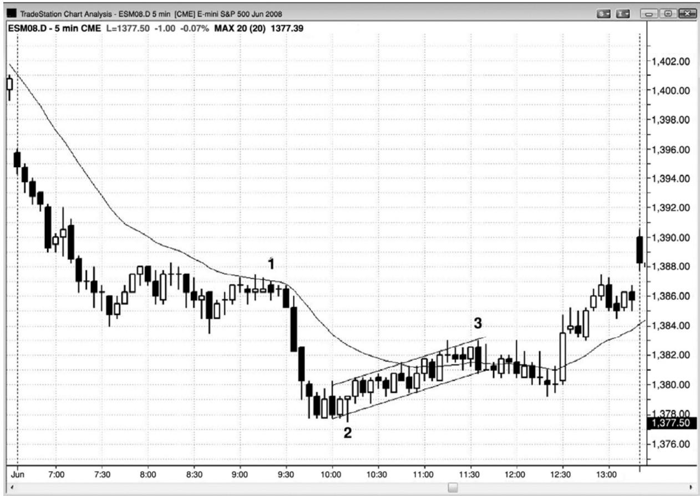
P209
当紧凑交易区间略微上倾或下倾时，它仍然是紧凑交易区间，应该以相同的方式对待。多头和空头接近平衡，总的来说最好是等待失败的突破和突破回撤。一般而言，所有紧凑交易区间都是延续形态，比如图 22.6 中在棒 1 结束的那段小型紧凑交易区间。
从棒 2 开始的区间形成于两条迅猛的空头腿之后，所以应该预期它会比较长，而且很可能引出两条上涨腿（截止棒 3 的运动成为两条腿中的第一条）。这些形态很难交易，常常形成虚假突破。如果一定要交易，那么就以最小规模交易，等待明朗的行情再次出现。这是一条微型通道，一旦突破到来，突破失败的几率非常高。市场向下突破，不过很快向上反转，进入收盘。
这张图表的更深入讨论
所有交易区间，尤其是紧凑的交易区间，都是磁力区，突破通常会被拉回区间之内。在一轮趋势已经持续了 20 棒或更多棒之后，如果出现一段水平的交易区间，那么那段交易区间常常成为趋势的最终旗形。突破常常失败，市场返回区间内的价位。有时会形成趋势反转。
在图 22.6 中，在棒 1 前后结束的、向均线的两条腿回撤，成为一个最终旗形，市场在收
盘前被吸引回到那一价格区域。
在棒 3 结束的紧凑交易区间也是一个最终旗形，突破形成一个更高低点。然后市场向上反转，超越紧凑交易区间，形成当日低点处卖出高潮之后的第二条上涨腿。
很多交易者把截止棒 2 的下跌运动仅仅看作一个大型的两条腿下跌。他们还认为在棒 1前后结束的交易区间是一个最终旗形。在当日低点处的卖出高潮之后，很多人预期形成两条上涨腿，并且会返回测试那一交易区间内部。由于运动是逆势的，所以他们愿意继续持有在棒 2 上方的二次入场买进的多头头寸，在棒线未跌破前一棒低点的任意时间内，他们不会离场。几条强多头趋势棒之后，他们开始跟踪调整保护性止损至强多头棒的低点下方，不久便能把他们的止损移至盈亏平衡点附近。
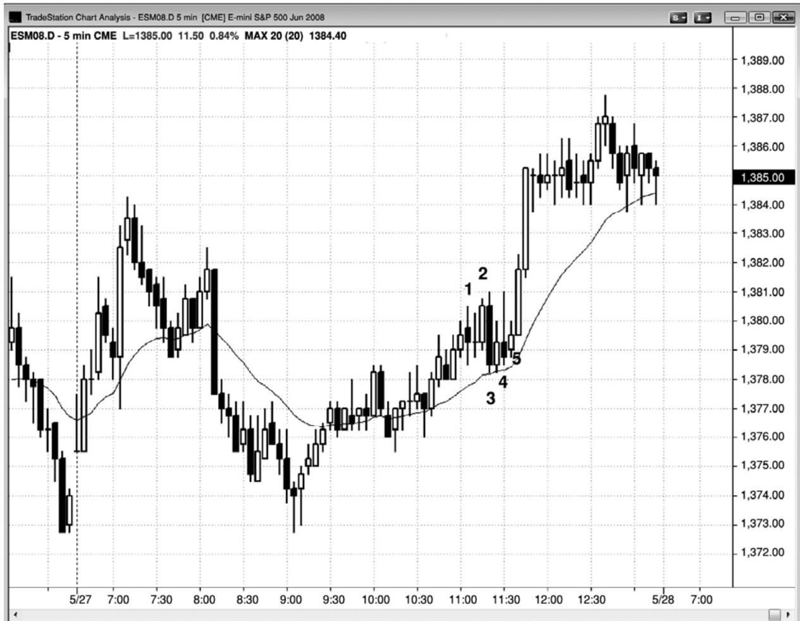
在图22.7中，棒1是一条大型外包棒，随后是一条十字星内包棒。虽然ioi形成也常常是一种可行的突破架构，但是最近棒线的尾线都太过突出。当出现三条横向棒线，而且其中至少一条是十字星时，没有人在控制市场，最好的做法是等待一方取得控制权，即形成明显突破的趋势棒。如果突破看起来很弱，而且形成反转，那么就准备在与突破相反的方向上入场。这些形态中的大部分趋势棒都会失败，成为反向架构。这种入场也常常失败，成为二次入场的信号。二次入场一般不会失败。在实时交易中，这种类型的棒线计数对大部分交易者来说都很难，如果他们等待清晰的走势，那么他们更可能会赚钱。
棒 2 突破了那个 ioi 形态，但是在大型重叠棒线上方买进，特别是在带刺铁丝中，通常是一个做多陷阱。实际上，老手们常常会在那条内包棒的高点或其上方设定限价单做空，预期多头突破成为一个陷阱，市场将快速向下反转。
那么，当棒 2 上方有被套的多头时，在棒 2 下方做空是合理的吗？因为那些多头将不得不抛出他们的多头头寸。你面对的是同一个总是。每当形成三条或更多大型棒线，而且其中一条是迫使你在紧凑交易区间顶部买进，或者在底部做空的信号棒时，你很可能会赔钱，因为机构的做法很可能刚好相反。
棒 3 的后一棒是一条多头内包棒，正在形成一个高点 2 做多架构，其中棒 2 是高点 1。那一棒不如前几棒长，你正在一条测试均线的多头走势棒上方买进，那常常是一笔不错的交易。虽然这是一笔合理的交易，但是市场仍然处于带刺铁丝形态中，所以最好等待二次信号或者突破回撤。棒 5 是一条多头走势棒，位于均线附近；它是三棒之内的二次入场，它与首次入场处于相同价位。所有这些因素都增加了成功率。截止那一棒收盘，多头很高兴看到一条大型多头突破棒，它没有下尾线，上尾线很短，市场很可能至少形成一波向上的测量运动，高度等于那个多头尖峰从开盘到收盘的距离。入场棒之后是又一条非常强的多头趋势棒。
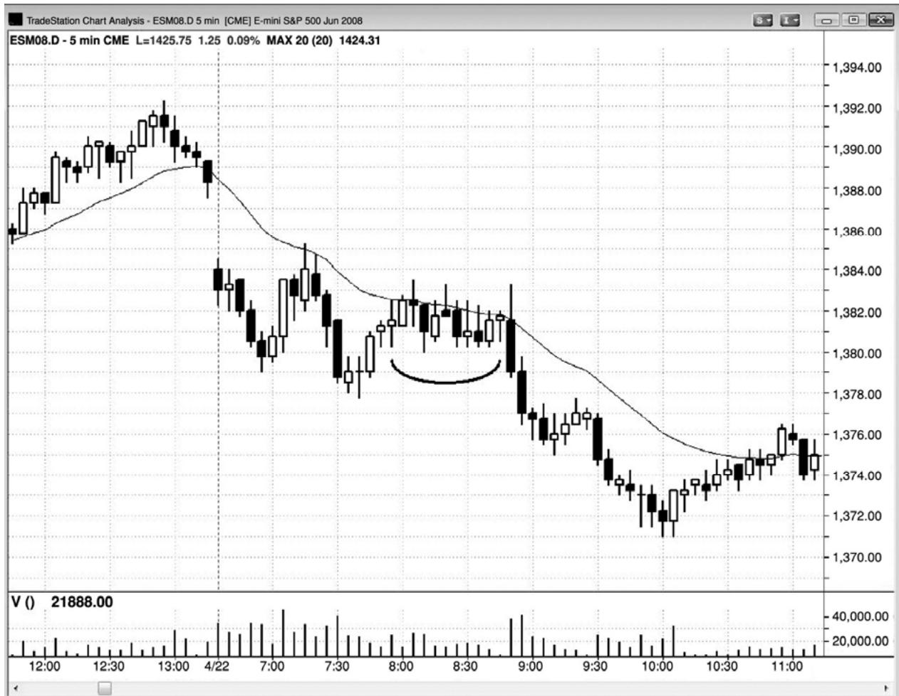
P211
当带刺铁丝形成于当日区间的中部时，几乎总是与 20 棒均线相邻，最好在失败的突破入场。图 22.8 中，市场在一个高点 2 中突破了顶部，立即向下反转在一个失败的高点 2 中突破底部。交易者们在紧凑交易区间被向下突破、在那一棒收盘，以及在它的低点下方做空。但是，你必须考虑到向上突破可能失败，才能够设定卖单。记住，在（那一棒）开始的一两分钟里，那次向上突破是一条强多头趋势棒，那种看涨的力量使很多交易者认为只能做多。那些交易者们让自己被套出空头交易。你必须不断地思考，特别是在市场正开始运动时。你不仅必须寻找一种方法入场，而且必须时刻考虑如果初始运动失败，然后快速向另一方向运动，那么会发生什么。否则，你将错过很棒的交易，陷阱总是在最好的交易机会中。
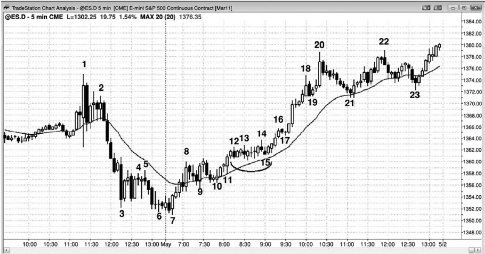
当一段紧凑交易区间形成于突破后的一个日内极点时，它通常会成为一个延续形态。寻找顺势入场，那有时出现在任一方向的虚假突破之后。图 22.9 中，截止棒 13 左右，大部分交易者认为，市场在向上突破多头尖峰棒 8 顶部后，正进入一段紧凑的交易区间。多头在前一棒低点及其下方买进，并且持有部分或全部头寸，静待很可能形成的向上突破。紧凑交易区间内的大部分棒线都拥有多头实体，而且区间一直位于均线上方；这两点都是买压的征兆，很可能向上突破。虽然棒线短小，而且呈横向排列，但是成交量通常保持较高水平。很多棒的成交量为 5,000 到 10,000 张合约，也就是说每分钟大约成交 1 亿美元的股票。
P212
在一个更低低点之后，出现一个至棒 8 结束的上涨尖峰，随后是由 6 条多头趋势棒形成的一波突破，在棒 12 到达一个新的高点。市场进入一段紧凑的交易区间，在棒 14 向上突破，但是突破立即失败。不过向下反转只持续了 1 棒，成为一个突破回撤做多架构，引出一轮强多头趋势。棒 14 反转把多头套出，空头套入；当双方都被套时，接下来的运动通常至少会持续若干棒。
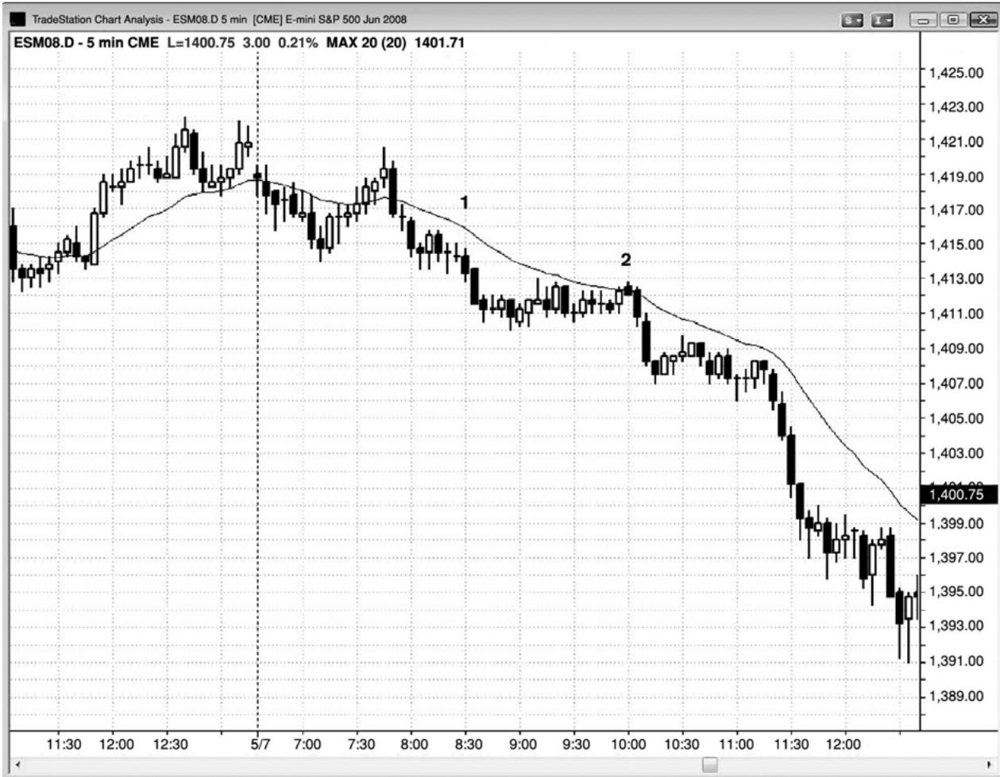
紧凑交易区间可能是趋势中一个可行的旗形。图 22.10 中，市场在尖峰下跌至一个当日新低后，棒 1 是带刺铁丝内一个低点 2 做空形态的入场。它是一个两条腿横向突破回撤。棒线相对较长，而且彼此重叠，尾线突出，而且该形态内包含几个十字星。
市场形成一段很长的紧凑交易区间，以棒 2 处对均线的两条腿横向测试结束。出现一条空头反转棒，在空头趋势中，当在均线处的低点 2 做空时，空头反转棒总是有利的。另外，那一棒较小，而且位于紧凑交易区间的顶部，所以风险较小。由于它是趋势中的一个入场，所以潜在回报很大。
如果仔细观察这个形态，那些你还会发现其他一些支持交易的信息，因为它是一个横向的低点 4，不过在这里并不是特别重要。形成一波五棒长的两条腿横向调整，然后向下调整（四棒长、两条腿），然后再次两条腿反弹（六棒长，横向至上涨），在对均线向上小幅突破后结束。
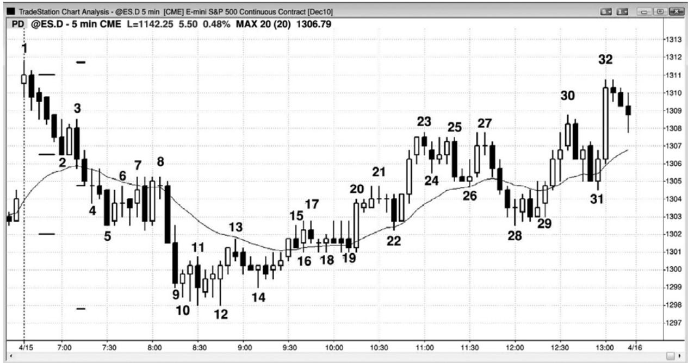
图 22.11 中，截止棒 10 的两条下跌腿的每条腿的底部，都形成了带刺铁丝形态。第一个带刺铁丝成为一个空头旗形，第二个成为一个反转。
今天开盘在昨天高点上方，但是立即形成一个很强的五棒下跌尖峰，该尖峰差一点就跌破均线。总在场内头寸显然是下跌，也就是说市场在超越那个空头尖峰的顶部之前，很可能会跌破棒 2 低点。实际上，在动能如此强劲，且刚好在均线和昨日高点上方的磁力位暂停的情况下，下跌的几率大于 90%，而不仅仅是 50%。
截止棒 5 的下跌运动处于一条紧凑的空头通道内，所以在第一次尝试向上突破通道时买进太过冒险。第一条下跌腿测试昨日收盘，但是下行动能非常强劲，所以市场很可能继续向下测试，可能是测试昨日低点区域。虽然大型重叠棒线、十字星、很长的尾线，以及双棒反转都表明多头正开始买进，但是在带刺铁丝内没有很强的买进架构。
棒 8 是均线处的一个扩张三角形做空架构。扩张三角形空头旗形拥有三次上推，通常拥有一条低点 3 信号棒，比如这里在棒 8。
由于带刺铁丝内存在很强的双向交易，所以当带刺铁丝形成于抛盘之后时，它常常成为空头趋势的最终旗形。市场通常会返回带刺铁丝价格区域，因为多空双方都认为那里存在新建交易的价值。
当市场跌破价值区域时，多头把更低的价格看作具有更高的价值，空头把它看作具有更低的价值。结果是多头积极买进，空头停止做空。那么，为什么对带刺铁丝的向下突破是由当天最强的两条空头趋势棒产生的呢？这是因为，一旦第一个带刺铁丝在测试昨日收盘时未能形成一个底部，那么下一个支撑位就是昨日低点。多头急于买进，但是在他们认为市场不大可能继续下跌前却一直在等待，他们在从棒10开始的带刺铁丝内重返市场。这是当天的第三个连续卖出高潮（截止棒2的下跌运动和从棒3至棒5的下跌运动是前两个高潮）。在经过三个连续卖出高潮之后，市场通常会形成横向至上涨的调整，至少持续 10 棒，至少包含两条腿。卖出高潮是情绪化的，通常表明多头绝望地在任意价位抛售，在崩盘期间，多头甚至是在市价抛售。一旦没有了弱势多头，剩余多头正愿意持有头寸经历更多下跌，一旦没有多头卖出，市场就形成了买进失衡。另外，在三个连续卖出高潮之后，空头在继续做空时变得非常犹豫，现在只会在明显的回撤之后才会考虑做空。
棒11是一个ioi形成，对于激进的多头来说，一条多头内包棒形成一个可接受的做多架构，特别地，如果他们愿意在更低价位加仓，那么他们就更愿意买进。相反地，大部分交易者在做多前应该等待一个更高低点。棒14更高低点拥有一个多头实体，是棒10和棒12双重底之后的一个回撤。
P214
这张图表的更深入讨论
无论市场什么时候形成大型趋势棒，那些棒线都是尖峰、高潮和突破。突破常常引起测量运动，在测量运动目标处，空头将部分或全部获利了结，激进的多头将开始买进。图 22.11中，从棒 3 到棒 5 的五棒空头尖峰向下突破棒 2。市场以从棒 7 到棒 8 的四棒测试该突破，突破点棒 2 低点与突破测试棒 7 之间的空隙是一个缺口，它将成为一个测量缺口。从棒 1 高点到该缺口中点的运动，常常可以投影至一个市场可能找到支撑的价位。这里，市场跌破了那一目标。对于测量运动投影，总在存在很多种选择，而且其中一些是不明显的。从当日高点到测量缺口内的十字星棒 4 的中点，给出的测量目标比当日低点低了 1 个跳动。一旦市场跌破第一个目标，交易者们就会寻找其他可能的目标。如果他们找到一个符合逻辑的目标，那么他们将比较自信地认为那至少是一两小时内的底部。
从棒 1 后一棒至棒 2 底部的尖峰，也可以引出一波测量运动。第一棒的开盘价至最后一棒的收盘价，常常用作测量的高度，第一个带刺铁丝形成的低点差 1 个跳动就到达那个目标。
Created with TradeStation
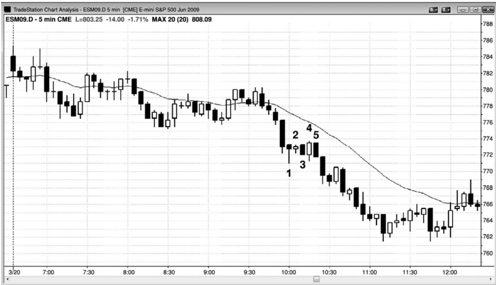
图 22.12 中，最初的三个小时里，市场处于一个小型区间内，所以很可能突破。棒 1、2和 3 呈横向排列，而且彼此重叠。由于棒 1 和棒 2 是十字星，所以这是一个带刺铁丝形态。但是，棒 3、4 和 5 拥有不错的实体和短小的尾线。这就意味着市场正在从带刺铁丝形态向空头趋势中一个普通的低点 2 做空架构转变，它引出一个双棒空头尖峰，然后是一条紧凑的空头通道。大部分正在逐步加仓的多头，可能会在空头趋势中的低点 2 做空架构抛出他们的多头头寸，尤其是当出现一条空头信号棒时。然后，通常至少在几棒之内，他们不会再次买进。这就是为什么低点 2 做空架构在空头趋势中如此有效的原因。多头在一旁观望，空头变得更加积极。